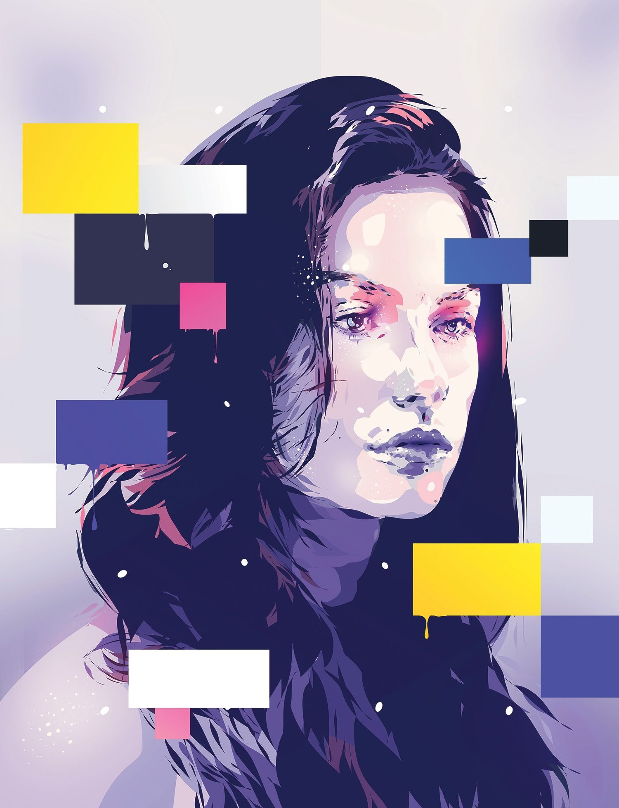
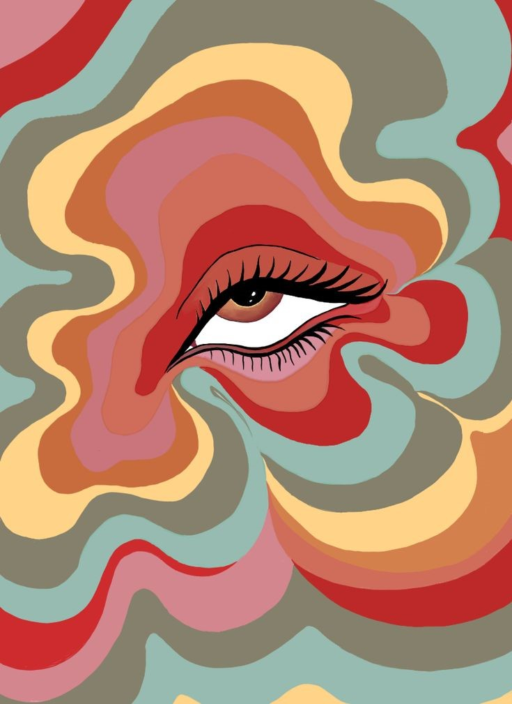

m1.html
p2
About Me
Hello! My name is Tamara, I'm a third-year student at OCAD majoring in Industrial Design. Sculpting, Illustrating and Painting portraits are my passions. I have very limited experience in coding, therefore, I'm excited to get to know more about it in this course and explore how it can enhance my works.
Art of Storytelling Through Illustration
Illustration fascinates me because it serves as a powerful medium for storytelling and self-expression. It allows me to bring to life the characters and worlds that inhabit my imagination, creating visual narratives that captivate and inspire. My style is diverse, often blending elements of fantasy and realism to craft artwork that is both whimsical and meaningful. I draw inspiration from everyday life, nature, literature, and the wide range of human emotions. Whether I'm creating detailed botanical illustrations, vibrant character designs, or atmospheric landscapes, I aim to imbue each piece with a sense of wonder and depth. Illustration enables me to communicate in a universal language, transcending words to evoke emotions and tell stories that resonate on a personal level.
Illustration Gallery

